9/17/06
Thuy - Roading at Finney-Hopper
with Amanda
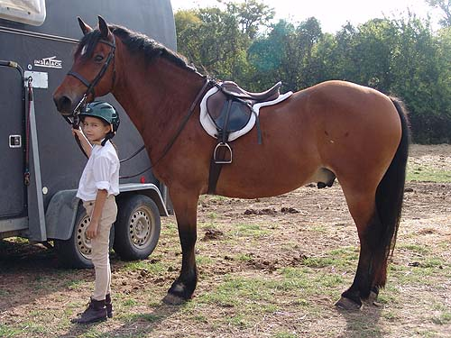
Holding Thuy while Mo gets ready.
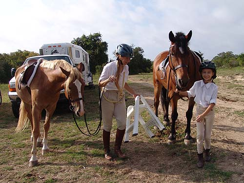
It takes some work to get two horses ready and both of us up.
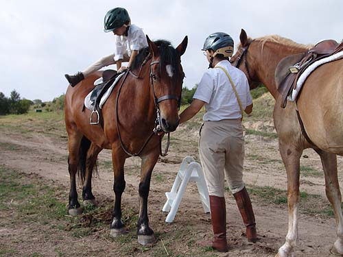
Amanda is limber enough that mounting isn't a problem.
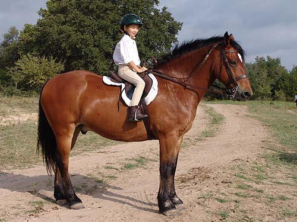
The new saddle fits Amanda better, and Thuy just fine. That's a new daisy rein for Thuy. It keeps him from reaching the grass.
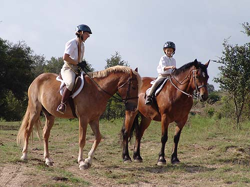
Waiting with Mo for the hounds to road out.
Far in the background, guarding the North side of the property.
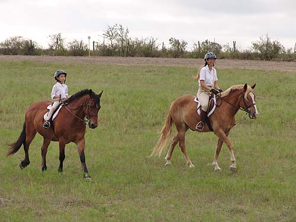
After reversing with the hounds, we were at the back of the group.
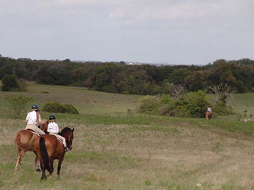
Following behind and not getting too close.
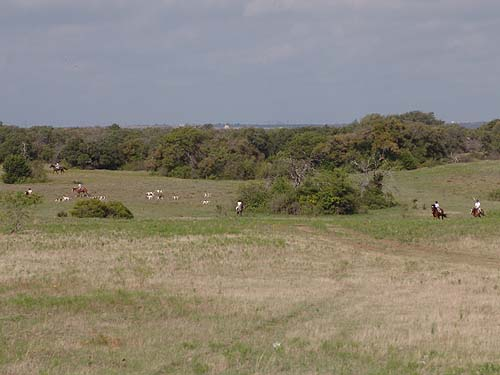
We trotted along on the right of the picture, and cut in front of the hounds.
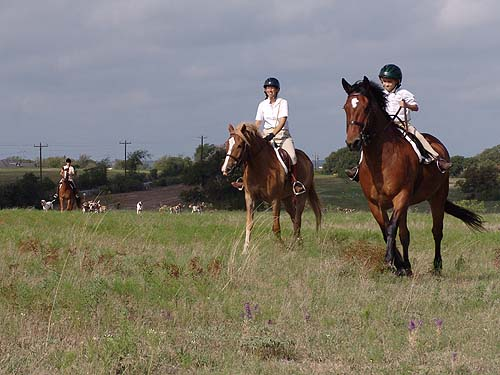
Trotting still takes some work for Amanda. There's a lot to concentrate on.
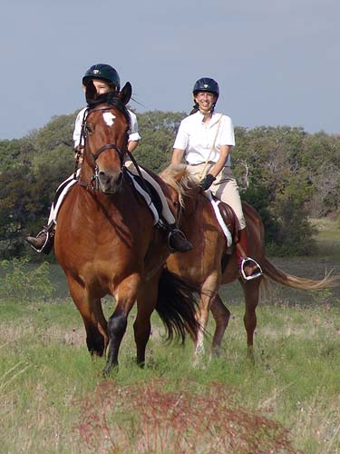
I'm more comfortable with Thuy and Amanda in the lead, so I can watch them.
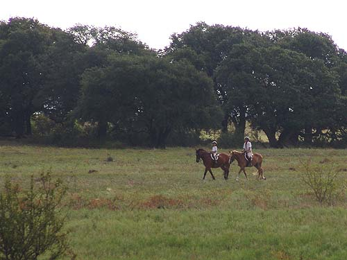
This was the first time Amanda rode out on a large piece of property.
We both enjoyed it.
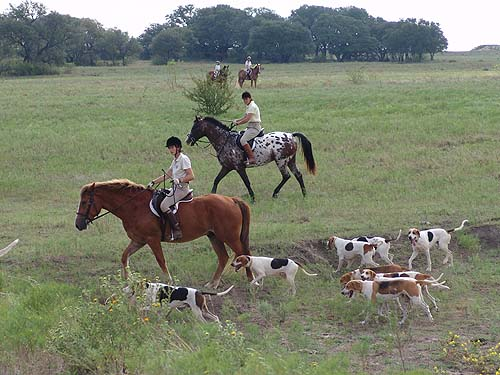
Watching the hounds work.
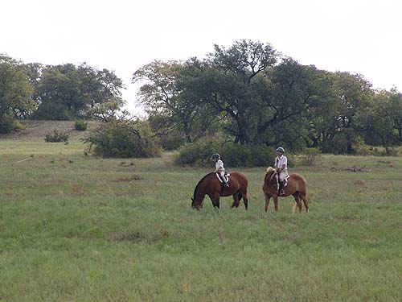
The daisy rein didn't always work, but any time Amanda told Thuy he needed to go back to work, he listened.
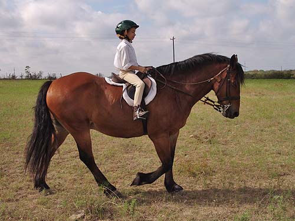
Even tired, her posture stayed good.
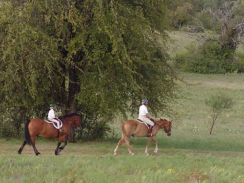
Thuy following Mo.
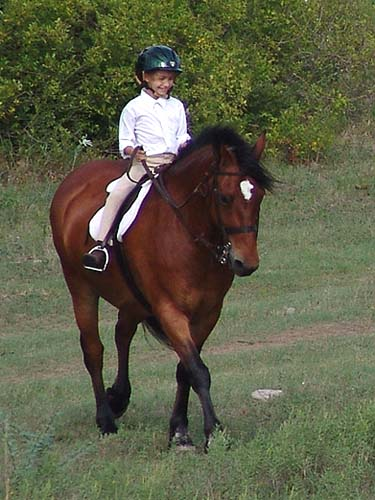
I think she enjoyed the ride.
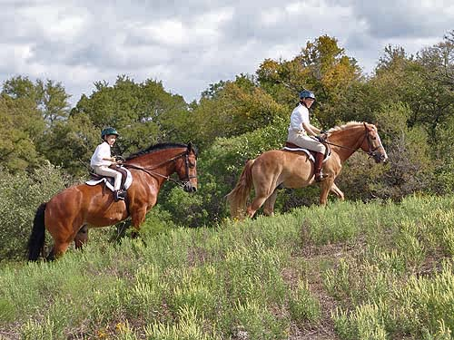
Heading to the top of a hill to have a better view.
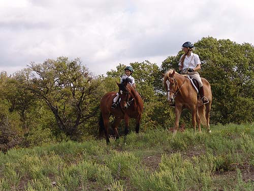
Watching the hounds from higher up.
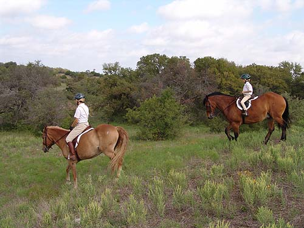
And back down as the hounds were gathered up and headed in.
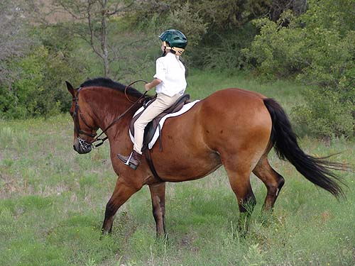
Amanda sitting back and putting her feet forward to balance going down the hill. Thuy is very careful, but Amanda still told him not to get too fast.
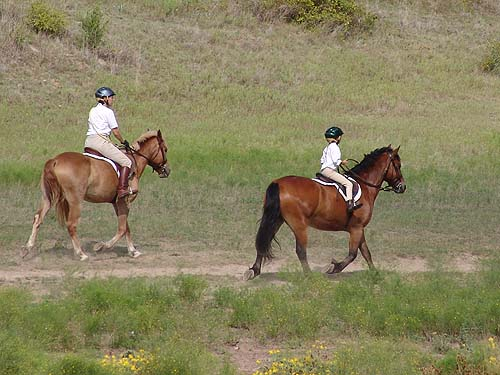
Trotting to catch up. Thuy knows when he's headed toward the trailers...